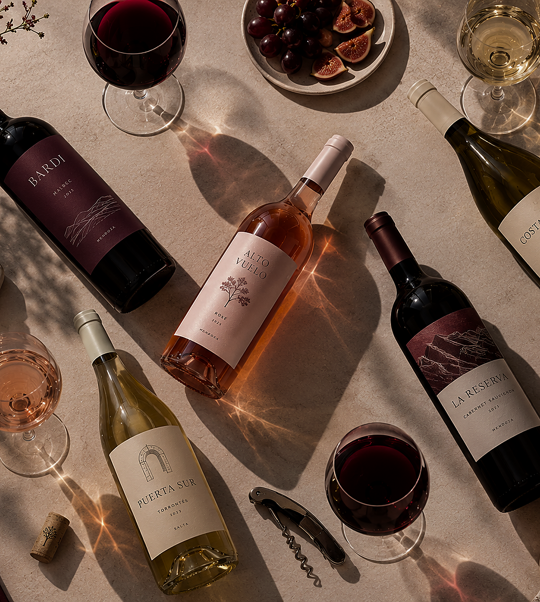

Nuestra historia
Todo empezó en 2020 con una idea simple y directa: acercar a Buenos Aires los mejores vinos argentinos, sin complicaciones ni vueltas. Queríamos que elegir una buena botella fuera una experiencia cercana, transparente y disfrutable para todos.
Lo que nació como una selección pequeña hoy se ha convertido en una vinoteca curada con absoluta dedicación y asesoramiento experto. Trabajamos codo a codo junto a bodegas boutique de Mendoza, Salta y la Patagonia, seleccionando cuidadosamente cada etiqueta porque nos importa profundamente que cada botella tenga una historia única para contar y compartir en la mesa.
Nuestro gran objetivo es acompañarte a descubrir el vino ideal para cada momento, ya sea una cena íntima, una reunión familiar, un regalo especial o un lindo brindis con amigos.
Una marca con los colores del vino.
Cada decisión de diseño tiene un porqué:
- Colores: los del vino. Bordó para el tinto, dorado suave para el blanco y rosa para el rosado.
- Tipografía: clásica en los títulos y clara para leer, como una buena carta de vinos.
- Símbolo: el signo de exclamación que cierra nuestro nombre, como el brindis.
Salud! nació para representar todos los tipos de vino, no uno solo.

El futuro:
Lo que empieza con una copa.
Salud! es solo el comienzo. Creemos en los proyectos que nacen de la pasión por el vino, y esta historia recién empieza.
Una marca abierta a todas las etiquetas
Nuestro nombre no pertenece a una sola bodega. En Salud! puede aparecer cualquier marca: cada etiqueta que elegimos suma un color nuevo a la mesa.